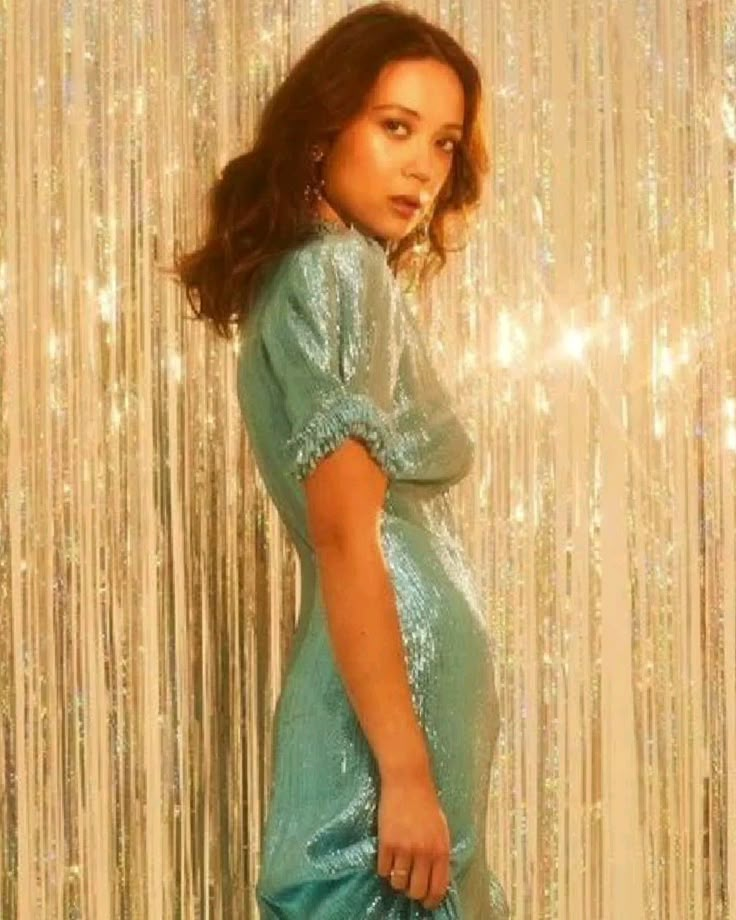

Laufey

/ BIOGRAPHY /
Laufey, or Laufey Lin Bing Jonsdottir, is an Icelandic singer and songwriter, record producer and multi-instrumentalist, having achieved prominence for her success as a jazz and classic-inspired pop artist.
She is born on April 23, 1999, with a mixed cultural heritage of Icelandic and Chinese origin. Laufey was immersed in music from a young age; her mother was a distinguished violinist, and her grandfather was a violin instructor in China.
By age 15, Laufey performed with the Iceland Symphony Orchestra as a soloist, progressing through notable competitions like Iceland's Got Talent and The Voice Iceland. She sharpened her craft studying cello at the hgihly prestigious Berklee College of Musics, eventually graduating in 2021.
Laufey has been a key role model in reintroducing jazz to more recent generations, pushing it back to the public eye; her music has been widely praised for making classical styles feel modern.
Through her work, Laufey intends to revitalise older musical styles, often presenting them as modern and sophisticated. She reflects a harmonious blend of all her cherished musical influences.
Find more about her: